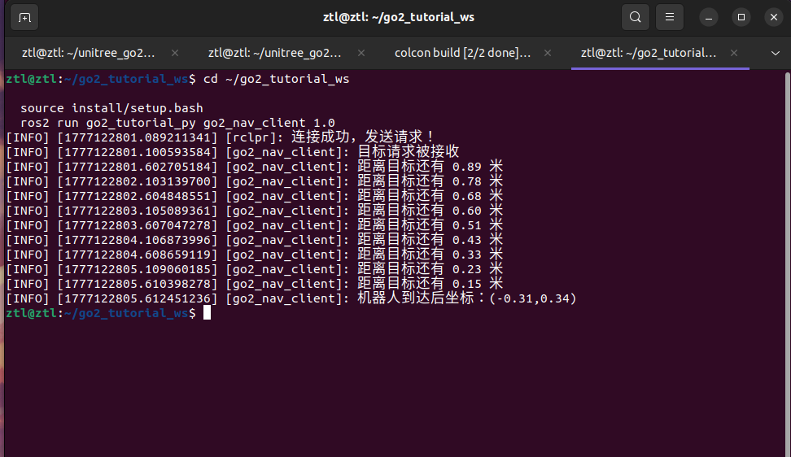

第 9 章 用 Action 封装"前进 X 米"¶
上一章我们用 Service 完成了一问一答的短事务。这一章再换一种通信形状:用 Action 封装"前进 X 米"这种长任务——发一次目标,中间持续拿到反馈,结束时才拿到最终结果。
🎯 本章通信方式:Action(动作)
形状:双向 · Goal + Feedback + Result · 长任务
本章关键 API:ActionServer(self, Nav, "nav", self.execute, ...)
要记住的事:客户端发一个 Goal,服务端在执行过程中持续推送 Feedback(进度信息),完成后再推送一次 Result。Action 是三大通信机制里最"重"的一种——它融合了 Service 的"请求-响应"和 Topic 的"持续发布",专为会持续一段时间的任务准备。
至此你已经看过三种通信了:
- Topic(第 7 章):单向广播,不等谁
- Service(第 8 章):一请求一响应,短
- Action(第 9 章):一请求 + 多反馈 + 一结果,长
本章末尾有完整对照表,可以带着疑问往下读。
本章你将学到¶
- 看懂
Nav.action里Goal / Feedback / Result三段分别表达什么 - 学会编写
go2_nav_server和go2_nav_client - 分清 Action 为什么比 Service 更适合“会持续一段时间的任务”
背景与原理¶
Action 可以把一个长任务拆成三层信息:
- Goal：我要做什么
- Feedback：我做到哪一步了
- Result：我最终做成什么样
这正好适合“前进 X 米”这种任务。因为它不是一句“开始”就完事了，中间还需要不断告诉客户端“还剩多少距离”，最后再回一个结果。
当前仓库里的 go2_nav_server 实现也很直白:
- 接收一个正的前进距离
goal - 订阅
/odom，持续计算已经走了多远 - 每隔
0.5秒发一次反馈distance - 到达阈值后切到
STOPMOVE，再把当前位置作为结果返回
架构总览¶
flowchart LR
A[go2_nav_client] ==>|"🎯 ①Goal:目标距离"| B["/nav<br/>go2_tutorial_inter/action/Nav"]
B ==> C[go2_nav_server]
C -.->|"②Feedback:剩余距离(持续推)"| A
C -.->|"③Result:最终位置 point"| A
D["/odom<br/>nav_msgs/msg/Odometry"] --> C
C -->|"(Topic)持续发布"| E["/api/sport/request<br/>unitree_api/msg/Request"]
classDef action fill:#fff3e0,stroke:#ef6c00,stroke-width:2px
class B action数一下这张图里从服务端回到客户端的箭头:一条 Feedback(会被多次推送) + 一条 Result(最后才推一次)。这就是 Action 相对 Service 的核心差异——Service 只能给一条响应,Action 能给一条"不断更新的进度"再加一条"收尾结果"。
和上一章相比，最大的区别不是控制链，而是接口层级更丰富了。
客户端不只是“发一次请求然后等结果”，还会在任务过程中不断收到反馈。所以它更像“盯着一个任务跑完”，而不是“打一通电话问一句”。
环境准备¶
这一章继续复用前一章的两个教程包:
go2_tutorial_intergo2_tutorial_py
先把 Action 定义看清楚。Nav.action 位于 src/tutorial/go2_tutorial_inter/action/ 下:
这三段要牢牢记住:
goal：目标前进距离，单位米point：任务结束后机器人的最终位置distance：执行过程中的剩余距离
这里没有 target_x/target_y，也没有 success/message。这章的任务就是最小版本的“沿当前朝向直线前进 X 米”。
实现步骤¶
步骤一:先理解 go2_nav_server 的职责¶
go2_nav_server 不是完整导航栈，也不是避障器。它只做一个很小的实验:
- 接一个正数目标距离
- 让机器人向前走
- 一边走一边计算还剩多少
- 到点后停下并回传结果
所以你可以把它理解成“Action 机制教学例子”，而不是可上生产的导航系统。
步骤二:实现 go2_nav_server¶
下面这段代码做五件事:
- 创建
nav这个 Action Server - 订阅
/odom保存当前位置 - 用定时器持续给 Go2 发送
Request - 在
goal_cb()里校验目标距离是否合法 - 在
execute()里计算剩余距离并发布反馈
把下面代码放进 src/tutorial/go2_tutorial_py/go2_tutorial_py/go2_nav_server.py:
import json # 把速度参数打包成 JSON
import math # 计算两点之间的距离
import time # 控制反馈发送节奏
import rclpy # ROS2 Python 客户端库
from geometry_msgs.msg import Point # Action 结果里的位置类型
from nav_msgs.msg import Odometry # 里程计消息
from rclpy.action import ActionServer # ROS2 Action 服务端
from rclpy.action.server import CancelResponse, GoalResponse, ServerGoalHandle
from rclpy.executors import MultiThreadedExecutor # 让回调和执行逻辑并发工作
from rclpy.node import Node # 自定义节点基类
from unitree_api.msg import Request # Go2 高层控制消息
from go2_tutorial_inter.action import Nav # 本章的 Action 定义
from .sport_model import ROBOT_SPORT_API_IDS # Go2 动作 id 常量表
class Go2NavServer(Node):
def __init__(self):
super().__init__("go2_nav_server")
self.point = Point()
self.odom_sub = self.create_subscription(Odometry, "odom", self.odom_cb, 10)
self.declare_parameter("x", 0.3)
self.api_id = ROBOT_SPORT_API_IDS["BALANCESTAND"]
self.req_pub = self.create_publisher(Request, "/api/sport/request", 10)
self.timer = self.create_timer(0.1, self.on_timer)
self.action_server = ActionServer(
self,
Nav,
"nav",
self.execute,
goal_callback=self.goal_cb,
cancel_callback=self.cancel_cb,
)
def execute(self, goal_handle: ServerGoalHandle):
feedback = Nav.Feedback()
while rclpy.ok():
time.sleep(0.5)
dis_x = self.point.x - self.start_point.x
dis_y = self.point.y - self.start_point.y
dis = math.sqrt(math.pow(dis_x, 2) + math.pow(dis_y, 2))
distance = goal_handle.request.goal - dis
feedback.distance = distance
goal_handle.publish_feedback(feedback)
if distance < 0.2:
self.api_id = ROBOT_SPORT_API_IDS["STOPMOVE"]
break
goal_handle.succeed()
result = Nav.Result()
result.point = self.point
return result
def goal_cb(self, goal_request: Nav.Goal):
if goal_request.goal > 0.0:
self.start_point = self.point
self.get_logger().info("提交的数据合法，机器人开始运动")
self.api_id = ROBOT_SPORT_API_IDS["MOVE"]
return GoalResponse.ACCEPT
self.get_logger().error("提交的数据非法")
self.api_id = ROBOT_SPORT_API_IDS["STOPMOVE"]
return GoalResponse.REJECT
def cancel_cb(self, cancel_request):
self.api_id = ROBOT_SPORT_API_IDS["STOPMOVE"]
return CancelResponse.ACCEPT
def odom_cb(self, odom: Odometry):
self.point = odom.pose.pose.position
def on_timer(self):
req = Request()
req.header.identity.api_id = self.api_id
params = {
"x": self.get_parameter("x").value,
"y": 0.0,
"z": 0.0,
}
req.parameter = json.dumps(params)
self.req_pub.publish(req)
def main():
rclpy.init()
node = Go2NavServer()
executor = MultiThreadedExecutor()
executor.add_node(node)
executor.spin()
rclpy.shutdown()
读这段代码时，有三件事值得重点盯住。
第一，goal_cb() 只接受 大于 0 的目标距离。也就是说，本章 Action 不支持负数倒车，更不支持给二维坐标点。
第二，真正的运动控制还是靠后台定时器 on_timer() 一直发 Request。Action 不会替代这条控制链，它只是把"什么时候开始、什么时候停、什么时候发反馈"组织起来了。
第三，执行函数 execute() 里判断到 distance < 0.2 才停止，这就是它当前的"到达阈值"。
🎯 本章 Action 通信的钥匙就是这一行
self.action_server = ActionServer(
self, Nav, "nav", self.execute,
goal_callback=self.goal_cb,
cancel_callback=self.cancel_cb,
)
ActionServer 的构造就把 Action 的三段结构都摆出来了:
goal_callback→ 收到新 Goal 时决定 ACCEPT/REJECTexecute→ 任务真正的执行体(在里面循环publish_feedback)cancel_callback→ 客户端想取消任务时的处理
对比第 7 章 create_publisher(单向)、第 8 章 create_service(一请求一响应),这一行展示的就是 Action "一 Goal + 多 Feedback + 一 Result + 可取消"的完整骨架。
想改前进速度?就一个参数 x
服务端声明了运行参数 x(默认 0.3 m/s),启动时用 --ros-args -p x:=0.2 就能改。和前两章一样,本章重点是 Action 通信机制,具体速度你随意调,不影响理解。
步骤三:实现 go2_nav_client¶
服务端准备好之后，客户端要做的事情就清楚多了:
- 连上
/nav - 发送一个目标距离
- 持续接收
distance - 最后打印
point
把下面代码放进 src/tutorial/go2_tutorial_py/go2_tutorial_py/go2_nav_client.py:
import sys # 读取命令行参数
import rclpy # ROS2 Python 客户端库
from rclpy.action import ActionClient # ROS2 Action 客户端
from rclpy.logging import get_logger # 打印日志
from rclpy.node import Node # 自定义节点基类
from go2_tutorial_inter.action import Nav # 本章的 Action 定义
class Go2NavClient(Node):
def __init__(self):
super().__init__("go2_nav_client")
self.client = ActionClient(self, Nav, "nav")
self.done = False
def connect_server(self):
while not self.client.wait_for_server(1.0):
self.get_logger().info("服务连接中...")
if not rclpy.ok():
return False
return True
def send_goal(self, goal):
goal_msg = Nav.Goal()
goal_msg.goal = goal
future = self.client.send_goal_async(goal_msg, self.feedback_callback)
future.add_done_callback(self.goal_response)
def goal_response(self, future):
goal_handle = future.result()
if goal_handle.accepted:
self.get_logger().info("目标请求被接收")
future = goal_handle.get_result_async()
future.add_done_callback(self.result_response)
else:
self.get_logger().info("目标请求被拒绝")
self.done = True
def result_response(self, future):
result = future.result().result
self.get_logger().info(
"机器人到达后坐标：(%.2f, %.2f)" % (result.point.x, result.point.y)
)
self.done = True
def feedback_callback(self, fb_msg):
fb = fb_msg.feedback
self.get_logger().info("距离目标还有 %.2f 米" % fb.distance)
def main():
if len(sys.argv) != 2:
get_logger("rclpy").error("请提交一个浮点类型的参数！")
return
rclpy.init()
go2_nav_client = Go2NavClient()
if not go2_nav_client.connect_server():
rclpy.shutdown()
return
go2_nav_client.send_goal(float(sys.argv[1]))
while rclpy.ok() and not go2_nav_client.done:
rclpy.spin_once(go2_nav_client, timeout_sec=0.1)
go2_nav_client.destroy_node()
rclpy.shutdown()
这段客户端代码的关键在于 feedback_callback()。
Service 是“发一次、等一次”；Action 是“发一次，但中间还能不断收反馈”。所以你看到的“距离目标还有多少米”，本质上就是 Action 比 Service 多出来的那一层能力。
步骤四:顺手理解为什么这里要用多线程执行器¶
go2_nav_server 用的是 MultiThreadedExecutor()，不是普通 rclpy.spin()。
原因很实际:服务端一边要执行 execute() 里的长循环，一边还要继续跑定时器和其他回调。如果只有单线程，某些回调可能会被长时间卡住。
对初学者来说，这里先记一个工程经验就够了:
- 短回调、简单节点，普通
spin()就够用 - 有 Action、定时器、长循环同时存在时，多线程执行器更稳
编译与运行¶
先编译接口包和教程包:
# 编译 Action 示例相关的两个包，并重新加载环境
cd ~/unitree_go2_ws
colcon build --packages-select go2_tutorial_inter go2_tutorial_py
source install/setup.bash
第一终端启动 Action 服务端:
# 启动 Nav Action 服务端
cd ~/unitree_go2_ws
source install/setup.bash
ros2 run go2_tutorial_py go2_nav_server
第二终端启动客户端，让机器人前进 1.0 米:
# 发送一个 1.0 米的前进目标
cd ~/unitree_go2_ws
source install/setup.bash
ros2 run go2_tutorial_py go2_nav_client 1.0
也可以不用客户端，直接从终端发 Action Goal:
# 直接从命令行发送 Goal，并持续查看反馈
cd ~/unitree_go2_ws
source install/setup.bash
ros2 action send_goal /nav go2_tutorial_inter/action/Nav "{goal: 1.0}" --feedback
如果你想让机器人走得慢一点，可以在服务端启动时改参数:
# 把前进速度改成 0.2 m/s
cd ~/unitree_go2_ws
source install/setup.bash
ros2 run go2_tutorial_py go2_nav_server --ros-args -p x:=0.2
结果验证¶
这一章跑通后，你应该能确认下面几件事:
ros2 action list -t里能看到/nav [go2_tutorial_inter/action/Nav]- 客户端会持续打印“距离目标还有 xx 米”
- 到达阈值后，客户端会输出最终坐标
point - 服务端在任务结束后会把动作切回
STOPMOVE
推荐按下面顺序自检:
# 看 Action Server 是否上线
ros2 action list -t
# 查看接口定义
ros2 interface show go2_tutorial_inter/action/Nav
# 观察 Go2 控制消息
ros2 topic echo /api/sport/request --once
当任务执行中时，/api/sport/request 的 api_id 应该是 MOVE；到达终点后，它应切回 STOPMOVE。

常见问题¶
1. ros2 action send_goal 直接被拒绝¶
现象:一发 Goal，客户端就提示目标请求被拒绝。
原因:当前代码只接受大于 0.0 的 goal。你传了 0 或负数，就会被 goal_cb() 拒绝。
解决:
- 用正数重新发 Goal，比如
1.0 - 如果以后你想支持倒车，那是后续扩展，不是当前仓库这版逻辑
2. 能收到反馈，但机器人不动¶
现象:日志一直在更新剩余距离，机器人却没明显前进。
原因:Action 本身没有直接驱动电机，它只是组织任务流程。真正的运动还是依赖 /api/sport/request 那条控制链。
解决:
- 用
ros2 topic echo /api/sport/request --once确认消息确实在发 - 确认 Go2 高层控制环境已经就绪
- 必要时把服务端参数
x调大一点点，比如0.3
3. 剩余距离一直不变、任务永远不结束(高频坑)¶
现象:客户端日志持续打印"距离目标还有 1.00 米",数值几乎没变化,任务迟迟不自动结束;服务端也只停在"提交的数据合法,机器人开始运动"这一行。最后只能 Ctrl+C 强行中断。
原因:本章的"到达判定"完全依赖 /odom 的实时更新——execute() 里是用当前位姿和起始位姿相减算已走距离的。如果 /odom 不变(驱动没起、话题无数据、或机器人根本没动),dis 永远接近 0、distance = goal - dis 就永远卡在初始值附近,自然永远到不了 < 0.2 的阈值,任务也就永远不会结束。
Action 的闭环锁在 /odom 上
这是本章最容易踩的坑,也是和 Topic/Service 最大的工程差异:Action 的"结束时机"不是靠客户端决定,而是靠服务端内部判断。而本章的判断依据就是 /odom 这条链。/odom 一旦不通,整个 Action 的生命周期就锁死。
排查步骤:
# 1. /odom 到底有没有数据
ros2 topic echo /odom --once
# 2. 如果没数据,先回第 6 章把 driver 跑起来
ros2 launch go2_driver_py driver.launch.py use_rviz:=false
# 3. 有数据的话,看服务端是不是在持续发 MOVE
ros2 topic echo /api/sport/request --once
# 4. 确认机器人真的在物理上移动,而不是动作被卡住
如果前三步都正常但机器人没动、/odom 也没变,那问题就不在本章 Action 代码,而是控制链到机器人之间断了——回到第 4/6 章先把基础链路打通,再回来跑本章。
4. 任务结束了，但机器人没有立刻停稳¶
现象:客户端已经打印最终坐标，机器人动作还有一点余量。
原因:当前代码用的是 distance < 0.2 作为停止阈值，本来就留了一点工程余量，不是“距离精确到 0.000 就停”。
解决:
- 先把它理解成教学版容差，不是 bug
- 如果后续想更严格，可以再单独调阈值逻辑
本章小结¶
这一章我们把 Go2 的一个长任务封装成了标准 ROS2 Action。
和上一章相比，最大的收获不是"又多了一个接口"，而是你真正看懂了 Goal、Feedback、Result 三段信息各自负责什么。对于机器人开发来说，这是一种非常常见的任务组织方式。
📊 ROS2 三大通信机制对照(第 7/8/9 章总复习)¶
到此你已经把 ROS2 最核心的三种通信机制都实际用了一遍。下面这张表把三章的差异浓缩到一屏:
| 维度 | 📡 Topic(第 7 章) | 📨 Service(第 8 章) | 🎯 Action(第 9 章) |
|---|---|---|---|
| 交互模式 | 单向广播 | 一请求一响应 | 一 Goal + 多 Feedback + 一 Result |
| 时长特性 | 持续,高频刷 | 瞬时短事务 | 长任务(秒级/分钟级) |
| 客户端能感知啥 | 只能订阅,收不到"处理完没" | 请求阻塞到响应返回 | 能跟进进度、可取消 |
| 典型场景 | 持续刷控制命令 / 发传感器数据 | 切状态 / 读一次参数 | 跑一段时间再回结果 |
| 本章 API 钥匙 | create_publisher(...) |
create_service(...) |
ActionServer(...) |
| 本章对应案例 | 10 Hz 发 Request 驱动 Go2 |
一次 Service 切巡航开关 | 前进 X 米并持续回报距离 |
| 在本章 mermaid 里的形状 | 粗单向箭头 ==> |
实线请求 + 虚线响应 | 实线 Goal + 多条虚线回流 |
怎么选? 给一个最简口诀:
- 要持续推数据 → Topic
- 要瞬时切状态、一次性问个结果 → Service
- 要跑一段时间、中间要看进度、结束要有结果 → Action
这三种机制可以混合使用(本章的 go2_nav_server 内部就同时在跑 ActionServer 和 Topic Publisher),实际工程里也往往是组合拳。
下一步¶
前面三章都还停留在“通信机制怎么用”。从下一章开始，我们把视线转回感知链路，先去把 Go2 的点云数据吃明白，再慢慢往 SLAM 和导航栈推进。